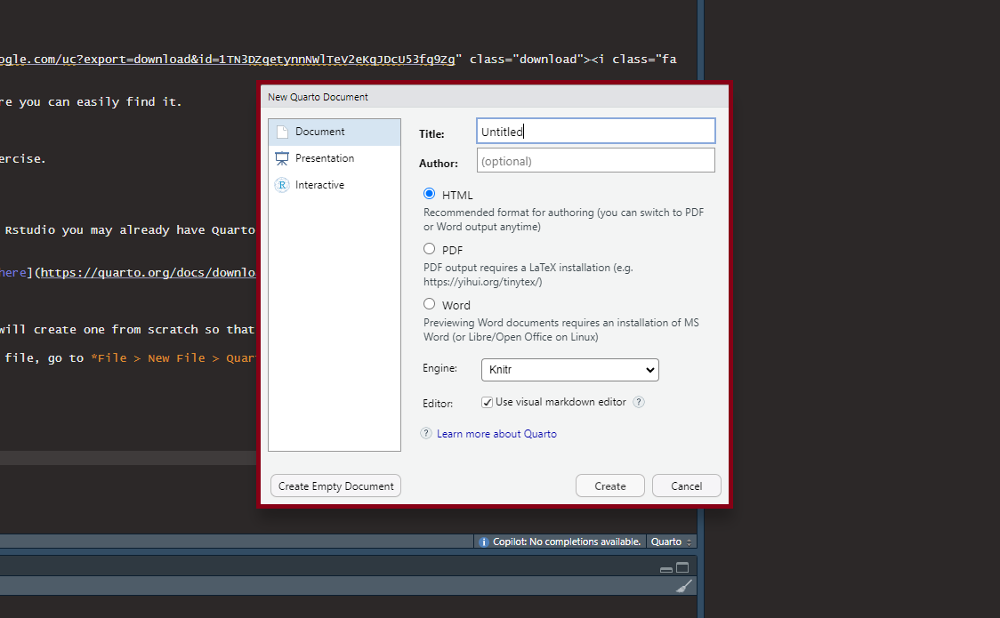
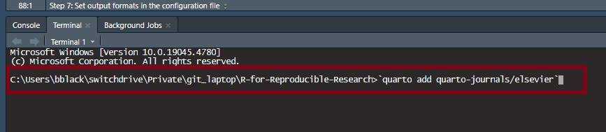
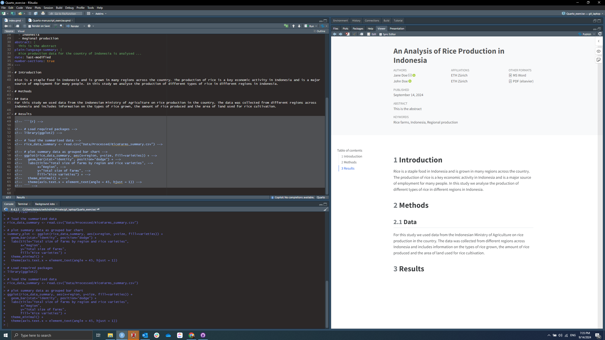
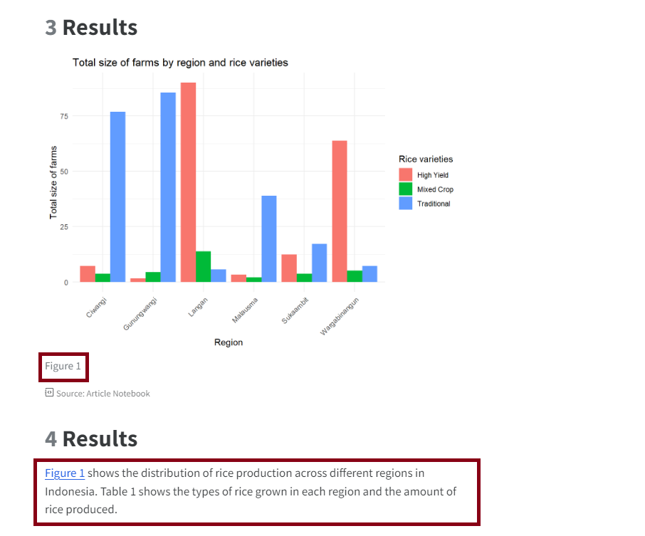
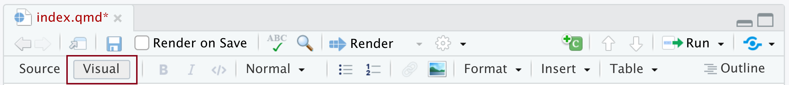
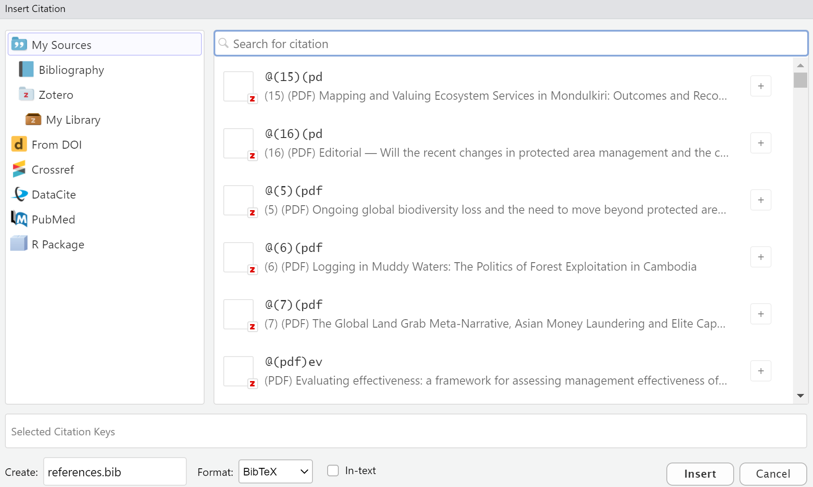
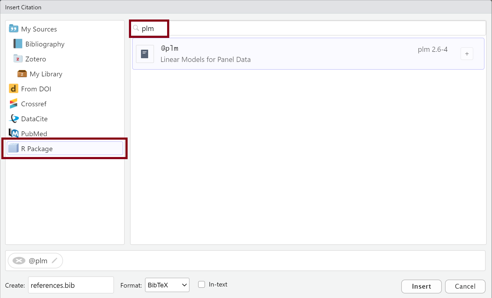

In this exercise we will start to write an academic manuscript using Quarto and incorporating data from the example R project we have used in the other exercises. The project is the same that is created in the first workflow exercise, however to save time or in case you haven’t completed this exercise we will start with the finished output from it.
Unzip the downloaded file and move the folder to a location on your computer where you can easily find it.
Step 2: Open the project in RStudio
Open RStudio and navigate to the folder where you saved the resources for the exercise.
Open the Rstudio project file in the directory (Rice_farm_analysis.Rproj)
Step 3: Download Quarto
Note: Because Quarto is bundled with Rstudio if you have a recent version of Rstudio you may already have Quarto installed. To check go to File > New File and you should see Quarto Document as an option.
If you do not have Quarto installed you can install it from the Quarto website here
Step 4: Create a Quarto document for the article content
The Quarto website provides a template for creating a Manuscript project but we will create one from scratch so that you understand the various files.
The 1st step is to create a Quarto document that will act as the primary content file, go to File > New File > Quarto Document. You don’t need to add title or author information in the wizard as we will do this in the document itself.

Quarto document wizard
Save the file as index.qmd in the root directory of the project. Using index as the file name is the convention for the main content file in a Quarto project and the software will look for this when attempting to create an output of the content. However it is possible to use a different file name if you prefer but it requires setting an option in the configuration file.
Step 5: Create a _quarto.yml configuration file
YAML files (.yml) are configuration files, and in the case of Quarto the convention is to use a file named _quarto.yml in the root directory of the project. This file will be used to set a range of options including the project type, code execution options and options for the output format/s.
Create a new file with File > New File > Text File and save it to the root directory of the project and name it _quarto.yml. Adding the extension .yml will automatically set the file type to YAML.
Step 6: Specify the Manuscript project type in the configuration file
Note: All YAML options are set using key-value pairs and the Quarto documentation provides a list of options that can be set in the configuration file.
The first step is to identify your project as a manuscript by entering the following code in the _quarto.yml file:
_quarto.yml
project:type: manuscript
If you do want your main content file to be named something other than index.* you can add the file name with the article key (but make sure that your .qmd file name matches the entry):
_quarto.yml
manuscript:article: Rice_farm.qmd
Step 7: Set output formats in the configuration file
The next step is to set the output formats for the document. Quarto supports outputting your manuscript to a range of formats simultaneously including HTML, PDF, Docx and LaTeX. The output formats and their individual options are also set in the _quarto.yml file.
For this exercise we will set the output formats to HTML, docx and PDF. Add the following code to the _quarto.yml file:
For PDF outputs specifically, there a number of templates that have been produced to align with the formatting of major academic publishers. These are available as Quarto extensions.
For this exercise we will use the Elsevier template. Quarto extensions can be installed directly using the terminal in Rstudio. To install the Elsevier template run the following code in the terminal: quarto add quarto-journals/elsevier

Once the template is installed you can set the PDF output to use the template by adding the following code to the _quarto.yml file indented below the existing format entry:
_quarto.yml
elsevier-pdf: default
Step 8: Complete the front matter content
The front matter of the document is where you can enter the title, author/s and other metadata for the document. In the case of academic manuscripts this also includes the abstract, keywords, author institutions and roles (according to the CRediT Taxonomy). The full list of front matter options for Quarto manuscripts can be found here.
Front matter is entered as YAML content at the start of the main content file index.qmd. To be recognised as YAML content it must be enclosed by three dashes --- at the start and end of the content block.
Enter example front matter for this exercise as follows:
---title: An Analysis of Rice Production in Indonesiaauthor:-name: Jane Doeorcid: 0000-0002-0760-5497corresponding:trueemail: Janedoe@gmail.comroles:- Investigation- Project administration- Software- Visualizationaffiliations:-id: ETH_PLUSname: ETH Zürichdepartment: Planning of Landscape and Urban Systems (PLUS) Institut für Raum- und Landschaftsentwicklung (IRL)address: HIL H 52.1, Stefano-Franscini-Platz 5city: Zürichpostal-code:8093-name: John Doeorcid: 0000-0002-7859-8394corresponding:falseroles:[]affiliations:-id: ETH_PLUSkeywords:- Rice farms- Indonesia- Regional productionabstract: | This is the abstractplain-language-summary: | Rice production data for the country of Indonesia is analysed ...date: last-modifiednumber-sections:true---
Now take some time to practice editing this content by, for example, changing the title, adding yourself as an author or changing the abstract. You will see that indentation is very important for YAML content to work correctly.
One nice feature is the fact that you can use the affiliation: id option to avoid needing to repeat details for authors from the same institution.
Step 7: Add manuscript content
Now we have our manuscript project and content file set up let’s add some content. Content in Quarto files is written in Markdown format, which takes some getting used to but will quickly become intuitive.
Add some content to the index.qmd file. For example, use # to create a heading and ## for subheadings:
# IntroductionRice is a staple food in Indonesia and is grown in many regions across the country. The production of rice is a key economic activity in Indonesia and is a major source of employment for many people. In this study we analyse the production of different types of rice in different regions in Indonesia. # Methods## DataFor this study we used data from the Indonesian Ministry of Agriculture on rice production in the country. The data was collected from different regions across Indonesia and includes information on the types of rice grown, the amount of rice produced and the area of land used for rice cultivation.# ResultsFigure 1 shows the distribution of rice production across different regions in Indonesia. Table 1 shows the types of rice grown in each region and the amount of rice produced.
Now lets render our manuscript for the first time to see how the output looks. To render the document click the Render button in the top of the Rstudio source pane:
This will render the document to HTML and open it in the viewer pane on the right:

Step 8: Add Figures and Tables
Figures and tables can be added to quarto documents using code blocks in various programming languages. To add a code block into a Quarto document you use three backticks followed by the language name in braces, for example an R chunk would be: ```{r} and then close the block with another three backticks. Code blocks are executed when the document is rendered and the output is included in the final document (although this behaviour can be controlled with execution options).
Lets add a figure to the document using the R code from the exercise script Scripts/02_data_visualisation.R to create a bar chart of the area of farms growing different types in different regions in Indonesia.
Add the following code block to the index.qmd file below the Results heading:
```{r}# Load required packageslibrary(ggplot2)# load the summarized datarice_data_summary <- read.csv("Data/Processed/RiceFarms_summary.csv")# plot summary data as grouped bar chartggplot(rice_data_summary, aes(x=region, y=size, fill=varieties)) + geom_bar(stat="identity", position="dodge") + labs(title="Total size of farms by region and rice varieties", x="Region", y="Total size of farms", fill="Rice varieties") + theme_minimal() + theme(axis.text.x = element_text(angle = 45, hjust = 1))```
Now if you re-render the document you should see the figure included in the output.
Step 9: Add Cross-references
Quarto allows you to cross-reference figures, tables and sections in your document.
Add a label to the figure code block by adding the following line at the top of the code block:
```{r}#| label: fig-barchart```
Now add a cross-reference to this figure in the text by changing the word Figure 1 to @fig-barchart in the 1st sentence of the Results section:
# Results@fig-barchart shows the distribution of rice production across different regions in Indonesia. Table 1 shows the types of rice grown in each region and the amount of rice produced.
Now if you re-render the document you will see that the figure has been automatically numbered and the text now contains a hyperlinked cross reference to the figure:

Step 10: Add citations
Quarto provides the functionality to not only add citations to your documents but to automatically generate a bibliography, both of which can be formatted according to a wide range of citation styles to meet journal requirements. For a detailed explanation of citations with Quarto see the guide here.
Quarto uses the standard Pandoc markdown representation for citations, whereby citations go inside square brackets and are separated by semicolons, e.g. [@citation]. Citations can be entered manually however they need to have a corresponding entry in the articles bibliography file (a .bib or .csl file in the root directory of the project). Instead, we will add a citation using the wizard in the Quarto visual editor which will automatically create the citation entry in the bibliography file.
At the top of the source pane click the Visual button to switch to the visual editor:

Navigate the methods section and position the cursor at the end of the sentence:
For this study we used data from the Indonesian Ministry of Agriculture on rice production in the country.
In the Visual editor tool bar at the top the top of the source pane click Insert and in the drop down menu select Citation (or alternatively use the keyboard shortcut Ctrl + Shift + F8 on windows). This will open the Insert Citation wizard:

The Rice Farms data used for the exercises comes from the plm package so we will cite this as an example (even though it is totally accurate in terms of the sentence content). Click on the tab for R packages on the left side of the wizard, enter plm in the search bar and click on the entry in the window below to select it:

Make sure the Create box in the bottom left corner of the wizard has a value in it, the default should be references.bib.
Now click Insert and the wizard will close, you will see that the citation has been added at the cursor location and a references.bib has been created in the root directory of the project. If you openthis file you can see the bibliographic details of the citation (Note if you have previously added citations or already created a references.bib file citations will all be added to the same file.
Now when you render the document this citation will automatically be hyperlinked to the corresponding entry in the bibliography that is appended to the end of the document.
Tip: In our experience the easiest method of adding academic citations is to use the Quarto-Zotero integration. In this case you select the Zotero tab in the Insert Citation wizard and if Zotero is running on your computer you will be able to search your whole library to add citations.
Summary
In this exercise we have only touched upon a few of the many of the useful features of Quarto for writing reproducible research documents. As such we would urge you to look through the Quarto documentation to learn about some of the other features as well as useful packages and extensions such as the trackdown package which allows you to convert Quarto documents in Google docs (and back to Quarto again) to facilitate collaboration with users not familiar with the format.